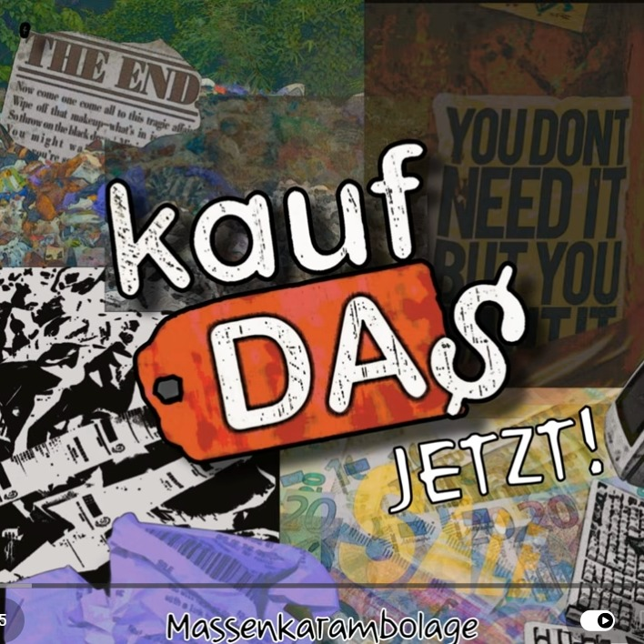

Review
MASSENKARAMBOLAGE - Kauf das jetzt!

Ich kenne MASSENKARAMBOLAGE inzwischen seit ungefähr drei Jahren.
Ich habe die Banausen sogar schon selbst veranstaltet.
Eigentlich sollte man meinen, dass man dann irgendwann weiß, womit man rechnen muss.
Tut man nicht.
Schon der Albumtitel ist so herrlich bescheuert, dass man kurz denkt:
"Ach komm. Ernsthaft jetzt?"
"Kauf das jetzt!"
Ja nee.
Mach ich bestimmt.
...
Verdammt.
Vielleicht doch.
Genau dieses Gefühl zieht sich durchs ganze Album.
Die Band wirft dir eine komplett bekloppte Idee vor die Füße.
Du verdrehst die Augen.
Und fünf Sekunden später musst du grinsen, weil das Ding plötzlich doch funktioniert.
Bestes Beispiel:
"Scheiß Bayern".
Vor jeder einzelnen Strophe wird die Musik angehalten.
Eine Stimme erklärt ganz ernsthaft, dass jetzt die nächste Strophe kommt.
Und worum es darin geht.
Das Problem:
Der eigentliche Songtext besteht im Grunde nur aus:
"Scheiß Bayern."
Danke für die Erklärung.
Wäre jetzt auch ohne gegangen.
Aber genau deshalb ist es wieder lustig.
Ich hasse solche Ideen.
Und liebe sie gleichzeitig.
Dann lese ich in der Trackliste:
"Radiosong".
Mein erster Gedanke:
Die Kackbratzen haben doch keine Ahnung.
Das muss "Kein Radiosong" heißen.
Das haben die Wohlstandskinder schließlich schon vor Jahren abschließend geklärt.
Dann läuft das Ding los.
Herrlich schräg.
Fast schon leidend.
Und ich denke noch:
"Okay ..."
Bis plötzlich der Moment kommt, auf den ich bei Campino im Schloss Bellevue gehofft hatte.
BÄM.
Fick das System.
Rotzpunk.
So muss das.
Und dann kommt ausgerechnet der Titelsong.
"Kauf das jetzt!"
Schon wieder so eine völlig bekloppte Idee.
Diesmal bekommt der Konsum seine Quittung.
Nicht mit erhobenem Zeigefinger.
Sondern indem die Band der Konsumgesellschaft erst den Spiegel vorhält, ihn anschließend auf den Boden wirft und zum Schluss noch gemütlich auf den Scherben herumtrampelt.
Herrlich.
MASSENKARAMBOLAGE machen auf diesem Album vieles anders.
Manches wirkt zunächst komplett bescheuert.
Und genau darin liegt oft die Stärke.
Das hier ist kein geschniegeltes Punkrock-Album.
Keine perfekt durchoptimierte Produktion.
Sondern ungeschliffener, ehrlicher Rotzpunk, der seine Ecken und Kanten nicht versteckt.
Auf ihrer eigenen Seite nennen sich MASSENKARAMBOLAGE Deutschpunk mit Haltung aus Wuppertal. Laut. Direkt. Unbequem.
Kann man so stehen lassen.
Vor allem, weil es nicht wie ein Werbesatz klingt, sondern eher wie eine Warnung.
Und genau deshalb funktioniert das so gut.
Ein persönlicher Tipp zum Schluss:
Falls ihr irgendwo auf einem Flyer lest, dass MASSENKARAMBOLAGE in eurer Nähe spielen ...
Geht hin.
Ich durfte die Band selbst veranstalten.
Und ich verspreche euch:
Die reißen live noch deutlich mehr ab als auf Platte.
Verdammte Banausen.
Mehr zur Band findet ihr auf massenkarambolage.eu.